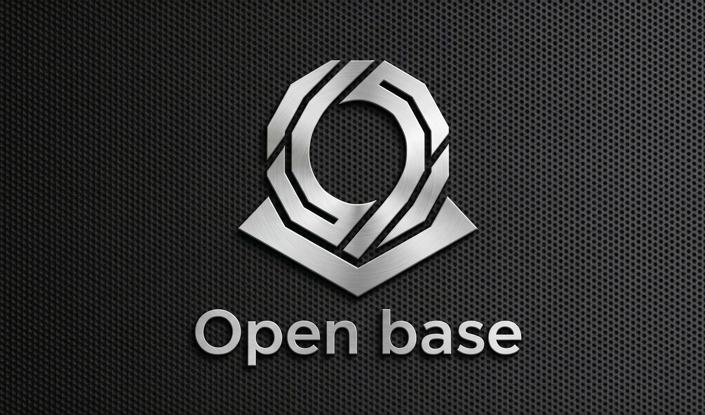

良い仕事をしていても、それが伝わらなければ人は集まらない。採用ブランドは戦略的に構築できます。応募の「量」と「質」を同時に高める採用広報の体制を整備します。
この課題を相談する →求人を出しても応募が少ない。あるいは全く集まらない。会社の魅力が市場にまったく届いていない状態。
量はある程度集まるが、選考に進める人材がいない。伝えているメッセージと求める人材像がずれている可能性がある。
「他の会社と何が違うのか」を候補者に明確に伝えられていない。条件だけで比較されてしまい、知名度の高い会社に負けてしまう。
現在の求人票・JD・採用ページ・SNS発信などを分析し、候補者に伝わっているメッセージと実際の魅力のギャップを特定します。競合他社との差別化軸も洗い出します。
「この会社で働く理由」を言語化したEmployer Value Proposition（EVP）を設計します。給与・ポジションだけでなく、文化・成長機会・ミッションの魅力を整理し、刺さるメッセージを構築します。
EVPをベースに、求人票・JD・採用ページを全面的にリライトします。ターゲット人材が「自分ごと」として読める内容に変え、応募転換率を大幅に改善します。
社員インタビュー・カルチャードキュメント・Wantedly/note等の採用広報コンテンツの企画と制作を支援します。継続的に発信できる体制づくりまでサポートします。